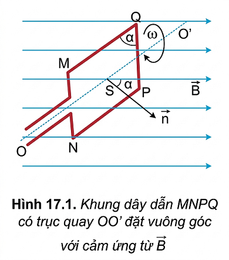
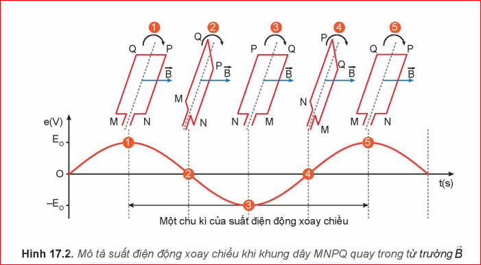
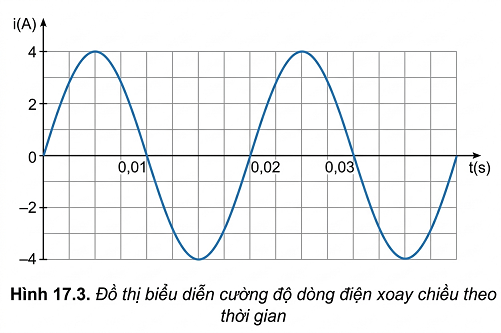
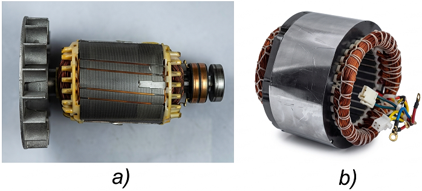
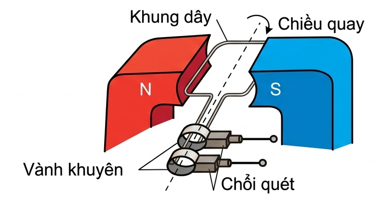

"Dòng điện xoay chiều được sử dụng rất phổ biến trong đời sống. Dòng điện xoay chiều được tạo ra bằng cách nào?"
Xét một khung dây dẫn \(MNPQ\) có diện tích \(S\), quay đều với tốc độ góc \(\omega\) quanh một trục \(OO'\) vuông góc với các đường cảm ứng của một từ trường đều có cảm ứng từ \(\vec{B}\).
Theo hiện tượng cảm ứng điện từ, trong khung dây xuất hiện một suất điện động biến đổi theo thời gian:
\(e = E_0 \cos(\omega t + \varphi_0)\)
Nếu khung dây dẫn \(MNPQ\) có \(N\) vòng dây thì suất điện động cực đại của khung dây là \(E_0 = NBS\omega\).
Chu kì \(T\) và tần số \(f\) của suất điện động liên hệ với tần số góc \(\omega\) bởi các công thức:
\(T = \frac{2\pi}{\omega}\) (s), \(f = \frac{\omega}{2\pi}\) (Hz)

Câu hỏi 1: Khung dây dẫn trong Hình 17.2 ở vị trí nào thì suất điện động có giá trị cực đại? Giải thích.

Câu hỏi 2: Giả sử tại thời điểm \(t\), từ thông qua khung dây là \(\Phi = BS \cos \omega t\). Hãy chứng tỏ suất điện động cảm ứng có dạng: \(e = BS\omega \cos(\omega t + \varphi_0)\).
Thảo luận 1: Làm thế nào để dẫn dòng điện ra mạch ngoài khi khung dây dẫn quay đều trong từ trường?
Thảo luận 2: Thiết kế phương án tạo ra dòng điện xoay chiều.
Nếu nối hai đầu của khung dây với mạch tiêu thụ điện, giữa hai đầu đoạn mạch có một hiệu điện thế xoay chiều (điện áp xoay chiều):
\(u = U_0 \cos(\omega t + \varphi_u)\)
Khi đó, dòng điện chạy qua mạch là dòng điện xoay chiều có cường độ:
\(i = I_0 \cos(\omega t + \varphi_i)\)
Giải nghĩa các giá trị:
| Kí hiệu | Ý nghĩa |
|---|---|
| \(u, i\) | Giá trị điện áp và cường độ dòng điện tức thời. |
| \(U_0, I_0\) | Giá trị cực đại của điện áp và cường độ dòng điện. |
| \(\Delta\varphi = \varphi_u - \varphi_i\) | Độ lệch pha giữa điện áp và cường độ dòng điện. |
Dựa trên tác dụng nhiệt tương đương của dòng điện không đổi, người ta đưa ra các giá trị hiệu dụng:
\(I = \frac{I_0}{\sqrt{2}}\) và \(U = \frac{U_0}{\sqrt{2}}\)
Thảo luận: Dựa vào đồ thị Hình 17.3, xác định chu kì, tần số, giá trị cực đại và giá trị hiệu dụng của cường độ dòng điện.

Máy phát điện xoay chiều gồm 2 bộ phận chính:
Bộ phận đứng yên được gọi là stato, bộ phận quay được gọi là rôto.

Hoạt động hoàn toàn dựa trên hiện tượng cảm ứng điện từ. Khi nam châm hoặc cuộn dây quay, từ thông qua cuộn dây biến thiên điều hòa theo thời gian, sinh ra dòng điện xoay chiều trong mạch.

Thảo luận 1: Hãy viết biểu thức suất điện động của máy phát điện xoay chiều khi khung dây có N vòng quay đều tốc độ \(\omega\).
Thảo luận 2: Vì sao cần vành khuyên và chổi quét đối với máy phát điện loại 1 (khung dây quay)?
EM CÓ BIẾT
Khi khung dây quay tốc độ cao thì vành khuyên và chổi quét rất nhanh mòn. Vì vậy, các máy công suất lớn thường thiết kế rôto là nam châm và stato là cuộn dây cố định để loại bỏ linh kiện này.
Dòng điện xoay chiều có ưu thế rất lớn trong truyền tải điện năng đi xa nhằm giảm hao phí bằng các máy biến áp. Chúng phục vụ rộng rãi trong thắp sáng, vận hành máy móc sản xuất, và ứng dụng lớn trong y học (máy chụp MRI, X-quang...).
Thảo luận 1: Ngoài thắp sáng và chạy máy thì dòng điện xoay chiều còn dùng làm gì?
Một số quy tắc bắt buộc để đảm bảo an toàn:
Thảo luận 1: Nhận biết ý nghĩa của các biển báo an toàn điện.
Thảo luận 2: Vì sao không nên sử dụng thiết bị điện trong quá trình sạc pin?
Thảo luận 3: Vì sao cần lắp cầu dao đóng ngắt ở vị trí phù hợp, dễ tiếp cận?
Thảo luận 4: Vì sao cần lựa chọn thiết bị điện có công suất phù hợp với mạng lưới điện?
Thảo luận 5: Nêu tầm quan trọng của việc tuân thủ quy tắc an toàn điện.
EM CÓ THỂ
- Giải thích cách tạo ra dòng điện xoay chiều trong nhà máy thuỷ điện (dùng sức nước đẩy rôto là tuabin nam châm quay).
- Đề xuất một số biện pháp sử dụng điện an toàn trong gia đình.
EM CÓ BIẾT
Máy phát điện 3 pha sử dụng 1 rôto nam châm quay trước 3 cuộn dây đặt lệch nhau một góc \(120^\circ\). Ba suất điện động sinh ra có đồ thị dao động giống nhau nhưng lệch pha nhau \(\frac{2\pi}{3}\) rad.
Câu 1: Nguyên tắc tạo ra dòng điện xoay chiều dựa trên hiện tượng nào?
Câu 2: Trong máy phát điện xoay chiều, bộ phận đứng yên được gọi là:
Câu 3: Công thức liên hệ cường độ hiệu dụng và cường độ cực đại là:
Câu 4: Tần số dòng điện tiêu chuẩn xoay chiều tại Việt Nam là bao nhiêu?
Câu 5: Suất điện động cực đại \(E_0\) trong khung dây tỉ lệ thuận trực tiếp với đại lượng nào?
Bài 1: Một khung dây có \(100\) vòng quay với tốc độ \(50\) vòng/s trong từ trường đều \(B = 0,1\) T. Diện tích mỗi vòng dây là \(200\text{ cm}^2\). Tính suất điện động cực đại.
Bài 2: Một quạt điện xoay chiều sử dụng mức điện thế hiệu dụng \(220\) V. Tìm giá trị cực đại của mức điện áp này.
Bài 3: Cường độ dòng điện qua điện trở \(R = 100\ \Omega\) có biểu thức \(i = 2\cos(100\pi t)\) (A). Tính nhiệt lượng toả ra trên điện trở trong thời gian \(1\) phút.